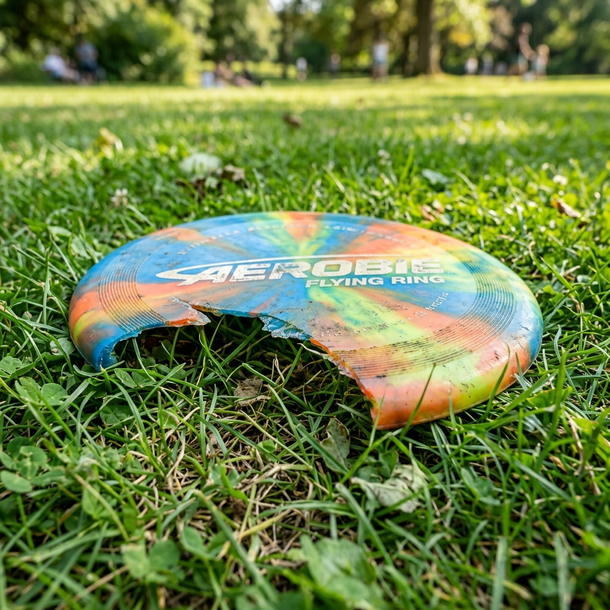
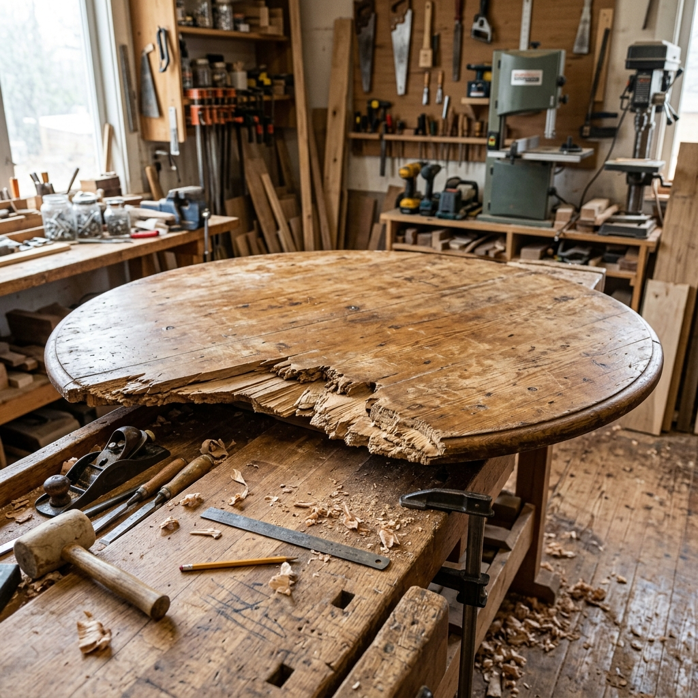

项 目 式 学 习 · 探 究 课
学习路线：考古情境引入 ➔ 探索折纸找心法 ➔ 探索垂径作图法 ➔ 虚拟实验室挑战 ➔ 场景巩固
考古学家在深邃的汉代古墓中发掘出了一块精美的青铜镜残片。
博物馆需要利用 3D 打印技术将其复原成完整的圆形。
核心挑战：在只剩下一段弧线的情况下，如何精准地找出它原本的“圆心”？
第一阶段探索
如果这个残片印在一张纸上，我们能用什么最简单的方法找到圆心？
请完成折纸探索的同学将作品投屏，并大声向全班说明：
为什么两次对折的交点，就一定是圆心？
（提示：回想一下圆的对称轴和圆心的关系）
第二阶段探索
真实出土的青铜碎片坚硬无比，无法折叠。
数学家如何在硬物上，像折痕一样精准找出对称轴呢？

小明的一个圆形飞盘边缘破损了一大块。他想在飞盘的正中心贴一个炫酷的贴纸。他应该怎么做？请上台说理。
参考思路：在飞盘背面画两条弦，用三角板分别作出这两条弦的垂直平分线，交点即为飞盘中心。

木匠师傅拿到了一块残缺的圆形木板，需要在背面确定圆心，才能安装桌腿支架。这在工业制造中叫做“无圆心定位”。
参考思路：实物木板无法折叠。同样利用画弦作垂线法（垂径定理的应用），两条中垂线交点即为圆心。
📜 本课记忆口诀
残缺圆弧找圆心，巧用对称有回音。
纸片可折交点现，硬物画弦作垂线。
两弦中垂必相交，定位圆心乐逍遥！